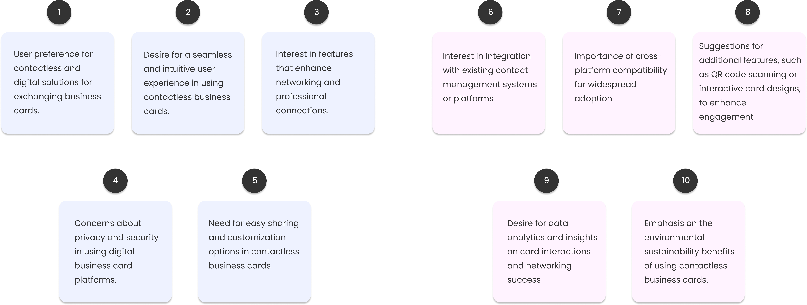
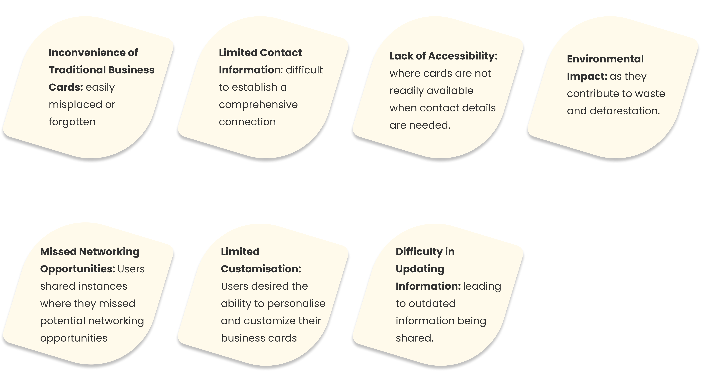
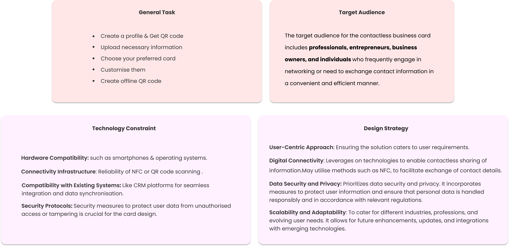
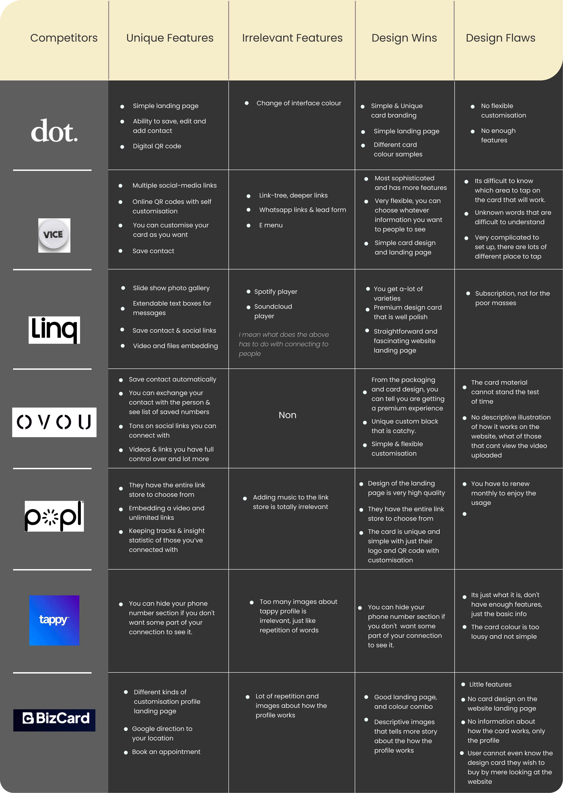
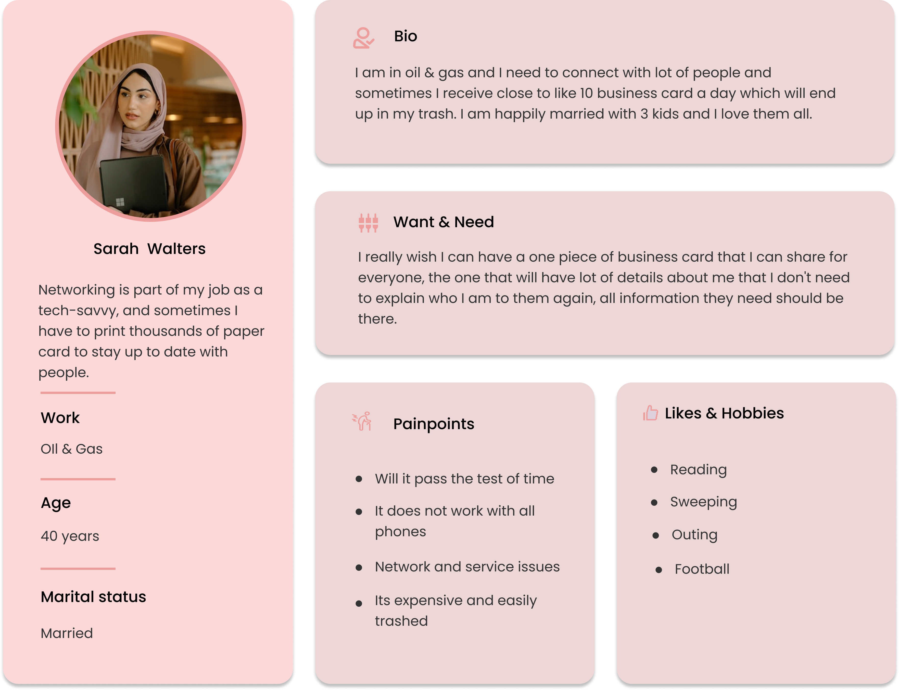
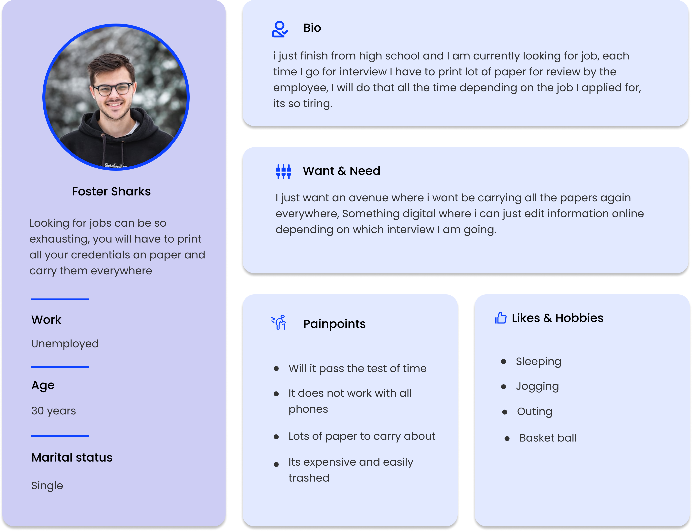
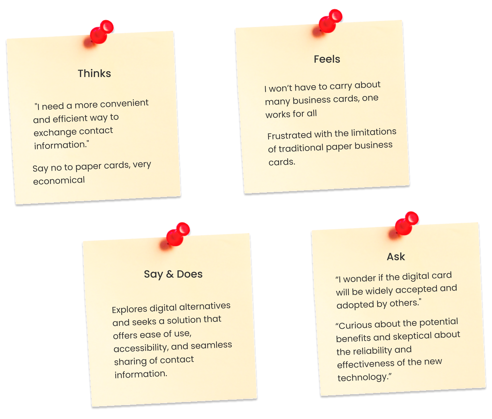
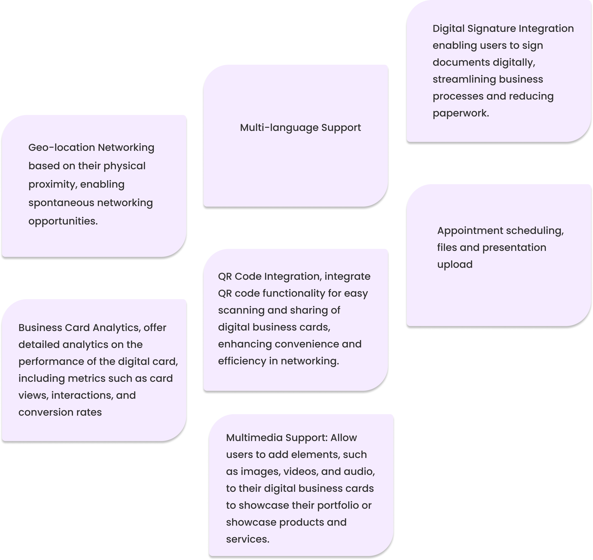
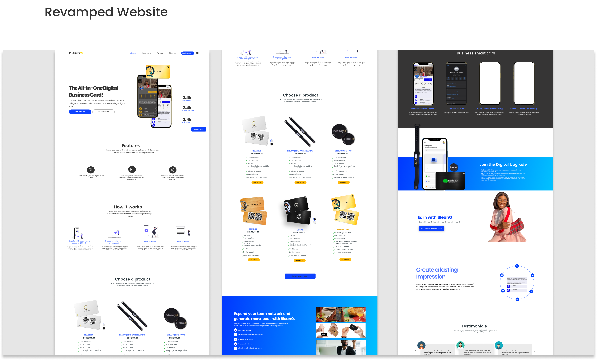
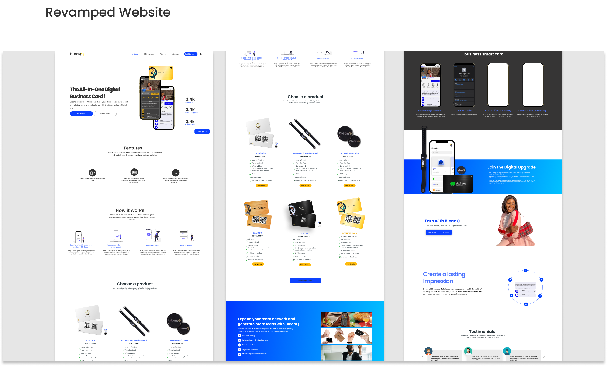

Bleanq ( Web, IOS and Android )
Simplify networking and stay connected in the digital age with our smart and interactive business card solution

My Role
UX Researcher and
Assistant Project Lead
The Team
2x UX Designers
3x UI Designers
10x Developers
My Key Contributions
Conducted User Research
Defining Research Objectives
Brainstorming and Ideation
Creating User personas
Conducting Competitive Analysis
Collaborating with developers
Analyzing and Synthesizing Data
Testing and Validation
Communication and Presentation
Virtual Prototyping
Tools Used
Murale
Miro
Figma
Adobe XD
Adobe After Effect
Adobe Photoshop
Sketch
Protopie
Maze & Usability Hub
Duration
UX - Two Months
UI - Three Months
Project Overview
The Bleanq Contactless Digital Business Card project aims to revolutionize the way professionals exchange their contact information by eliminating the need for outdated paper business cards. Bleanq is a cutting-edge solution designed to seamlessly connect individuals, allowing them to effortlessly share their professional information while reducing environmental impact.
Primary Objective
The primary objective of this project is to create a user-friendly and intuitive digital platform that enables users to create and manage their personalized digital business cards. By leveraging innovative technologies, Bleanq aims to provide a secure and convenient alternative to traditional business cards, enhancing networking experiences for professionals across various industries.
The Project Goal
Ultimately, the goal of the Bleanq Contactless Digital Business Card project is to empower professionals with a modern and efficient tool that enhances networking and leaves a lasting impression on potential clients and collaborators. By creating an intuitive and visually appealing interface, we strive to enable professionals to effortlessly connect, network, and build valuable business relationships in today's digital age.
Problem Statements
Paper card is the most prominent form of networking among people, however it also has some of its own challenges and cannot solve all problem. Therefore, we put together some of the problems that might hinder the ability to network and connect with people.


Design Process

Discover
User Research
User Interview
Competitive Analysis
Define
User Persona
Empathy Mapping
Ideated Features
Ideate
Site Map
User Journey
User Flow
Design
Wire Frame
Lo=Fi
Prototype
Testing
Feedback
Conclusion
Future Features
Research Questions: Unveiling the Key Inquiries to Address
- What are the current challenges and pain points faced by professionals in exchanging contact information using traditional paper business cards?
- What are the existing digital business card solutions available in the market, and how do they address the needs of professionals?
- What features and functionalities are most desired by professionals in a digital business card solution?
- How can the user experience of digital business card platforms be improved to enhance ease of use and adoption?
Research Findings: Understanding User Perspectives and Addressing Challenges
To ensure seamless user experience and inclusive design, a Google Form survey was conducted to gather user perspectives and identify areas of challenge in existing products, as well as gather opinions on potential features. The survey generated more than 200 responses, which were analyzed both qualitatively and quantitatively to effectively address the identified issues.
Synthesizing User Perspectives: Key Insights for Contactless Business Card Solution
Based on the research findings, the following key insights and user perspectives emerged:
- Ease of Exchange: Users expressed frustration with the traditional method of exchanging contact information using paper business cards. They highlighted the potential for misplacement or loss, leading to missed networking opportunities.
- Digital Business Card Solutions: Users were aware of existing digital business card solutions in the market. However, they found that many of these solutions lacked comprehensive features and did not fully address their needs for efficient contact sharing and management.
- Desired Features: Professionals expressed a strong desire for additional features and functionalities in a digital business card solution. These included the ability to customize and personalize their digital cards, easily share them across various platforms and devices, integrate social media profiles, and provide real-time updates.
- User Experience Improvements: Participants highlighted the need for enhanced user experiences in digital business card platforms. They emphasized the importance of intuitive interfaces, seamless navigation, and streamlined workflows that facilitate quick and effortless exchange of contact information.
Pain Points Identified from User Research
Design Strategy: Creating a Seamless Contactless Business Card Experience
By implementing this design strategy, the contactless business card solution strives to revolutionize the way professionals exchange contact information, eliminating the need for physical cards while enhancing convenience, connectivity, and productivity.
Competitive Analysis
Competitive Analysis: Evaluating Existing Solutions in the Market
To gain a competitive edge in the contactless business card space, a thorough analysis of existing solutions was conducted. This involved assessing features, user experience, pricing models, and market presence of competitors. Insights gained from this analysis informed the design and development of our solution, enabling us to identify opportunities for differentiation and deliver a superior product to our target audience.
Solutions : Differentiating Bleanq from Competitors in the Digital Business Card Market
Bleanq aims to stand out in the competitive digital business card market by solving unique problems that other competitors, such as Ovou, Vice, and Popl, have not yet addressed. By understanding the limitations of existing solutions, Bleanq aims to provide a superior user experience and offer unmatched value to its users.
- Lack of Seamless Integration: Bleanq addresses the lack of seamless integration by providing robust integration capabilities across various communication channels and software applications.
- Limited Offline Accessibility: While some competitors rely heavily on internet connectivity, Bleanq recognizes the importance of offline accessibility by allowing users to access and share digital business cards even without internet connectivity.
- Privacy and Security Concerns: Privacy and security are crucial considerations when sharing personal and professional contact information. Bleanq distinguishes itself by prioritizing data protection, implementing robust encryption measures, and providing users with comprehensive privacy settings, ensuring that their information remains secure and controlled.
- Customize ability and Branding Options: Bleanq acknowledges the importance of personal branding and customization. Unlike some competitors with limited design options, Bleanq offers a wide range of customizable templates, allowing users to tailor their digital business cards to reflect their unique brand identities and professional aesthetics.
- Enhanced User Analytics and Insights: Bleanq understands that professionals need actionable insights into their networking efforts. By incorporating advanced analytics features, Bleanq provides users with comprehensive data on card views, interactions, and engagement. This enables professionals to measure the impact of their digital business cards and optimize their networking strategies for better results.
Define Phase
User Persona
User persona is a fictional representation of the target audience, crucial for understanding their needs. In the case of contactless business cards, creating a user persona like Sarah, a tech-savvy marketing manager, helps identify pain points and design features that prioritize convenience, connectivity, privacy, and data security. By aligning the solution with the user persona, the contactless business card can meet the requirements of professionals and offer a seamless networking experience.
 Empathy / Affinity Mapping
The empathy mapping captures the user's expressed statements, thoughts, emotions, and actions regarding their doubts and uncertainties about adopting a contactless business card. It reflects their need for reassurance, validation, and evidence that the digital card can effectively replace the traditional paper cards. By understanding these concerns, the design team address them through effective communication, providing clear benefits and addressing any doubts or misconceptions about the technology..
Innovative Ideated Features: Enhancing User Experience and Value Proposition
The ideated features play a crucial role in the success of Bleanq by offering unique functionalities that set it apart from competitors and meet the diverse needs of its users. These features enable Bleanq to provide a superior user experience, enhanced convenience, and increased value to professionals seeking a contactless business card solution. Bleanq empowers users to effortlessly connect, network, and showcase their personal brand in a digital format.
Ideate Phase
User Journey
The user journey with Bleanq begins with a seamless onboarding process, where users can easily create their digital business cards and customize them to reflect their unique brand identities. Once the cards are created, users can effortlessly share them with others through various communication channels, both online and offline. Bleanq ensures that users can conveniently exchange contact information with a simple tap or scan, eliminating the need for traditional paper business cards. The platform also provides advanced analytics and insights, allowing users to track the impact of their digital business cards and optimize their networking strategies. Bleanq aims to provide a user journey that is intuitive, efficient, and empowering, ensuring a smooth and enjoyable experience throughout the entire process.

Design Phase
Low fi wire-framing & Hi fidelity / Paper sketching
This is the public profile visible to your connections. We have designed two interfaces based on the card you purchase, ensuring you receive excellent value for your investment. The Gold version caters to premium users who buy the gold card, while the second interface is for general users. The only difference is the interface color; everything else remains unchanged.

The Networking Business Card
Based on our survey and research findings, the majority of users expressed a preference for a simple yet aesthetically pleasing card design. To meet this demand, we created a range of card options including plain and customizable designs that strike a balance between simplicity and uniqueness. Users can choose from white, black, silver, and gold versions, catering to the preferences of highly classified business professionals. Additionally, users have the freedom to personalize their cards by incorporating their own logos or designs.

Lo-Fidelity wire-framing

High-Fidelity Prototype
High-Fidelity Prototypes: Elevating the User Experience
These high-fidelity prototypes incorporate visually appealing designs, interactive elements, and realistic user interactions to provide a more immersive and engaging experience.
Moreover, the hi-fi prototypes allow us to test the usability and intuitiveness of the interface, gathering valuable feedback to further refine and optimize the user experience. By simulating real-world interactions and scenarios, we can identify any potential pain points or areas for improvement and address them before the final product is developed.
Customize Your Impressions with Bleanq's App Screens Below

Testing Phase
Usability Testing
I conducted a user test with 20 participants who belonged to our target demographic, using prototypes of both the Public App and Website design. This user testing process was crucial in ensuring a better outcome that addresses the user's problems and needs effectively. By gathering feedback and insights directly from users, we were able to identify areas of improvement and make informed decisions to enhance the product's usability and overall user experience.
Negative Feedbacks
- Numerous typographical errors were found.
- The content lacks persuasiveness and fails to convey the intended message effectively.
- Upon initial interaction with the website, it was difficult to grasp the purpose and functionality of the web or app.
Positive Feedbacks
- The innovative nature of the product was highly appreciated, finding it intriguing.
- Users found the product to be well-thought-out, with a wide range of features.
- Even with the plain card, users felt a sense of luxury and prestige while using it to connect with others.
- The convenience of having a single card that replaces the need for multiple paper cards was praised, along with the added benefit of impressing others easily.
Feedback Review / Revamp
Based on the valuable feedback received, we diligently addressed the areas of improvement to create a better version of our product. We conducted a thorough review and rectified the numerous typographical errors, ensuring a polished and error-free experience for our users. Additionally, we revisited the content and made significant enhancements to make it more compelling and persuasive, effectively conveying the value proposition of our product. We also took into account the initial user confusion and redesigned the website and app interface to provide a clearer and more intuitive understanding of its purpose and functionality. These improvements have resulted in a refined and enhanced version of our product, aligning it more closely with user expectations and delivering a seamless and captivating experience for all users.
Here is the comparison of the public profile design before and after testing, showcasing what users will see when they tap the card on their phone.
 

Lessons learnt from this project
Lessons and Takeaway
Throughout this project, I have gained valuable insights and takeaways that have helped shape my understanding and approach. Some key learnings include:

- Team Collaboration : The process of constructing this project was highly educational and significantly enhanced my intellectual abilities. Without a competent team, I wouldn't have gained the knowledge and insights derived from this project. The seamless collaboration among team members facilitated mutual learning and growth. The collective effort and shared ideas contributed to our achievement of acquiring nearly 5,000 users and purchases in less than three weeks of going live.
- User-Centric Design: Placing the user at the core of our design process is crucial for creating a product that meets their needs and preferences.
- Iterative Approach: Embracing an iterative design process allows for continuous improvement by incorporating user feedback and making necessary adjustments.
- Testing for Usability: User testing is essential for identifying usability issues, uncovering pain points, and validating design decisions.
- Balancing Simplicity and Customization: Striking the right balance between simplicity and customization is important to provide a user-friendly experience while allowing personalization.
- Continuous Improvement: Launching the product is just the beginning, and continuous feedback collection and monitoring ensure ongoing refinement and improvement.